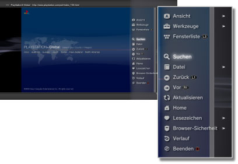

Netzwerk > Grundfunktionen des Internet-Browsers
Grundfunktionen des Internet-Browsers
Elemente auf dem Bildschirm

(1) |
Seitenname |
|---|---|
(2) |
Seitenadresse |
(3) |
SSL-Icon |
(4) |
Aktivsymbol |
(5) |
Icon für Browser-Sicherheit |
(6) |
Link-Zieladresse |
(7) |
Zeiger |
Scroll-Methoden
| Richtungstasten | Verschieben des Zeigers auf einen Link. |
|---|---|
 -Taste + Richtungstaste -Taste + Richtungstaste |
Seitenweises Scrollen. |
| Rechter Stick | Scrollen in der gewünschten Richtung. |
Verwenden des Menüs
Mit der  -Taste rufen Sie das Menü auf, in dem verschiedene Funktionen und Einstellungen zur Verfügung stehen. Das Menü können Sie mit der -Taste ein- oder ausblenden. Die Menüoptionen im Normal- und im Fenstermodus unterscheiden sich.
-Taste rufen Sie das Menü auf, in dem verschiedene Funktionen und Einstellungen zur Verfügung stehen. Das Menü können Sie mit der -Taste ein- oder ausblenden. Die Menüoptionen im Normal- und im Fenstermodus unterscheiden sich.

Eingeben einer Adresse (URL)
Wenn Sie die START-Taste drücken, erscheint eine Tastatur, über die Sie eine Adresse eingeben können. Wenn Sie nach dem Eingeben der Adresse  auswählen, wird die Tastatur ausgeblendet und die Seite mit der eingegebenen Adresse wird aufgerufen.
auswählen, wird die Tastatur ausgeblendet und die Seite mit der eingegebenen Adresse wird aufgerufen.
Kopieren von Text
Sie können Text von einer Seite im Internet-Browser kopieren.
1. |
Bewegen Sie den Zeiger mit dem linken Stick auf die zu kopierende Textstelle und drücken Sie dann die |
|---|---|
2. |
Halten Sie die |
3. |
Lassen Sie die |
4. |
Wählen Sie [Kopieren] aus dem angezeigten Menü. |
Anmerkungen
- Sie können den kopierten Text mit der Taste [Einfügen] auf der Bildschirmtastatur einfügen.
- Wenn Sie in Schritt 4 die Option [Suchen] auswählen, können Sie eine Internet-Suche mit dem kopierten Text als Schlüsselwort ausführen.
Drucken einer Webseite
Wenn Sie diese Funktion nutzen wollen, müssen Sie vorab  (Einstellungen) > [Drucker-Einstellungen] > [Druckerauswahl] auswählen und einen Drucker konfigurieren.
(Einstellungen) > [Drucker-Einstellungen] > [Druckerauswahl] auswählen und einen Drucker konfigurieren.
1. |
Öffnen Sie die Webseite, die gedruckt werden soll, und drücken Sie die |
|---|---|
2. |
Wählen Sie [Datei] > [Diesen Bildschirm drucken]. |
3. |
Prüfen Sie die Druck-Einstellungen. |
4. |
Wählen Sie [Drucken]. |
Anmerkung
Die Drucker, die verwendet werden können, hängen vom Land bzw. der Region ab. Weitere Einzelheiten finden Sie auf der SCE-Website für Ihre Region.
Öffnen mehrerer Fenster
Sie können mehrere Fenster gleichzeitig öffnen. Stellen Sie den Zeiger auf einen Link und halten Sie die  -Taste gedrückt, bis der Link in einem neuen Fenster geöffnet wird.
-Taste gedrückt, bis der Link in einem neuen Fenster geöffnet wird.